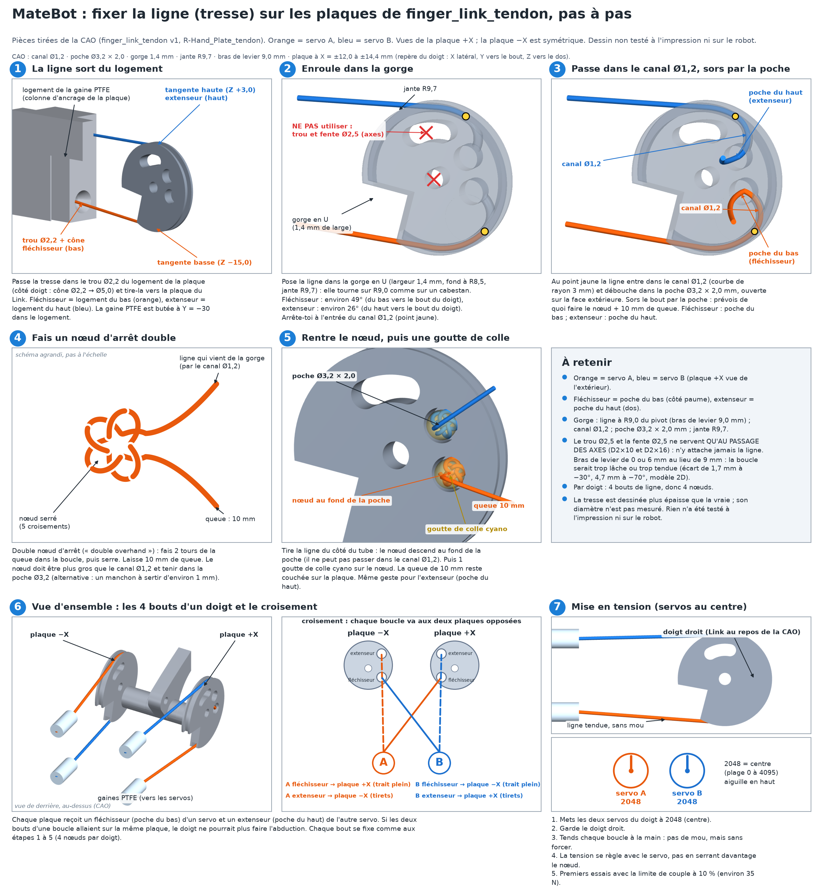

⚠️ Version v0, NON TESTÉE. Aucune pièce de cette variante n'a encore été imprimée ni mesurée. Les forces sont des estimations. Ce guide sera corrigé après le banc d'essai à un doigt. Sources :
README.mdetparts.py(matebot-hand-tendon), guide officiel AmazingHand_Assembly.pdf (Pollen Robotics, CC BY 4.0).
finger_link_tendon, qui remplace le Link d'origine. Chaque servo a une boucle : fléchisseur sur une plaque, extenseur sur la plaque opposée (boucles croisées, sinon le doigt ne peut pas faire d'abduction). Servo A : fléchisseur côté +X, extenseur côté −X. Servo B : fléchisseur côté −X, extenseur côté +X.🔄 v11 (2026-11-12, non testé) — v10 remplacé, voir le guide Markdown : le bloc unique
servo_bay_8x_sts3215est remplacé par le châssis 3-3-2 à rack ouvert (forearm_wrist_yoke,forearm_rail_3x_L,forearm_rail_3x_R,forearm_brace) : paire du pouce au poignet, puis index, majeur et annulaire sur deux rails de 3, faces alternées (TL, TR, BL, BR) — pouce et majeur en haut, index et annulaire en bas. Le rack est une plaque médiane ouverte des deux côtés, avec logements et voies sur les deux faces, sans croisement 3D. Un rang littéral de 3+3+2 de front a été écarté (une rangée de 3 coupe une paire et fait ~90 mm de large au poignet). Le fichierservo_bay_8x_sts3215.stlreste utilisable pour le banc d'essai. Dessin du tracé (traits pleins = haut, pointillés = bas) :forearm_tubes_FR.png. Aperçus :forearm_chassis_preview.png,forearm_parts_preview.png.
| Pièce | Fichier | Qté (1 main) | Note |
|---|---|---|---|
| Spool double gorge r8 | spool_r8.stl |
8 (+2 de rechange) | Cercle de vis officiel 14 mm, 4 × M3×6 (pas plus longues). 100 % de remplissage ou 6 parois, bride sur le plateau |
| Joug de poignet | forearm_wrist_yoke.stl |
1 | Nouveau (v10). Rack ouvert, paire du pouce sur la face haute. Se visse sur R-Wrist_Interface (poignet fixe), 4 logements du pouce en haut. Bossage de centrage (Y = −2) sur le plateau |
| Rail radial (3 servos, côté A) | forearm_rail_3x_L.stl |
1 | Nouveau (v10). Index en bas, majeur en haut, annulaire en bas, côté radial. Plaque médiane à plat, supports sous les nervures palmaires |
| Rail cubital (3 servos, côté B) | forearm_rail_3x_R.stl |
1 | Nouveau (v10). Même alternance, côté cubital. Plaque médiane à plat, supports sous les nervures palmaires |
| Entretoise palmaire | forearm_brace.stl |
3 | Nouveau (v10). 8 mm, dans les intervalles entre servos, côté palmaire de la plaque. À plat, sans support |
| Bloc d'ancrage des gaines (côté servos) | ptfe_anchor_8x.stl |
0 (banc seulement) | Inutile avec le châssis v10 (16 logements sur les rails et le joug, 8 en haut et 8 en bas). Conservé pour le banc avec le bloc 8 servos |
| Support des servos (banc) | servo_bay_8x_sts3215.stl |
1 (banc seulement) | 2 rangées de 4, ≈120 × 103 × 18 mm. Ne rentre pas dans l'avant-bras |
| Bague de pivot d'abduction (remplace la bague achetée Ø int. 6, igus GFM-0608-04) | bushing_d6_flanged.stl |
Option 1 : 4 (+2 de rechange) ; option 2 : 8 (+2) | Option 1 : seulement la bague du bas (celle du haut est remplacée par la bague-rondelle ci-dessous). Option 2 : 2 par doigt. Imprime-les debout (collerette sur le plateau), 0,12 mm, toutes ensemble. Voir le README de matebot/ |
| Bague-rondelle (remplace la grande rondelle M2.5 et la bague du haut ; option 1, Gimbal d'origine, vis par le dessus) | bushing_washer_d6.stl |
4 (+2 de rechange) | Nouveau (v8). Pièce en chapeau : disque Ø10 × 0,9 + manchon Ø ext. 7,95 / Ø int. 6,2 × 3,5, trou de vis Ø2,7. 3 doigts + pouce. Imprime-la disque sur le plateau, manchon vers le haut, sans support, PETG, 0,12 mm, 100 % de remplissage. CAO vérifiée, non testée à l'impression |
Rondelle plate imprimée (remplace la grande rondelle M2.5 ; option 2, Gimbal_tendon, vis par en dessous) |
washer_d8_printed.stl |
3 (+1 de rechange) | Nouveau (v8). Rondelle Ø8 × 0,9, trou Ø2,7. À plat sur le plateau. Inutile avec l'option 1 |
| Link à tendons (remplace le Link) | finger_link_tendon.stl |
4 (+2 de rechange) | v1 non testé (trous pour les axes ajoutés). Imprime-en 1 d'abord. Supports nécessaires. Voir le README de matebot/ |
| Gimbal à languette (remplace le Gimbal des 3 doigts de la plaque : index, majeur, annulaire) | Gimbal_tendon.stl |
3 (+1 de rechange) | Languette arrière avec fente en arc pour visser le Gimbal par en dessous. Imprime-en 1 d'abord, supports en arbre sous la languette. Voir le README de matebot/ |
| Doigt : Proximal, Distal, Proximal_Shell, Distal_Shell (pas de Link, voir ci-dessus) | Amazing Hand Parts - <nom>.stl |
4 de chaque (+2 Distal) | Shells en TPU (le README garde les coques/coussinets TPU d'origine) |
| Pouce seulement : Finger_Frame-1 et Gimbal d'origine | Amazing Hand Parts - Finger_Frame-1.stl, Amazing Hand Parts - Gimbal.stl |
1 de chaque (+1 Gimbal) | Le pouce se monte sur l'interface poignet, pas sur la plaque : il garde son Finger_Frame-1. Finger_Frame-1 et Finger_Frame-2 ne s'impriment plus pour index, majeur, annulaire (le bloc de pivot est dans la plaque ; Frame-2 ne servait qu'aux servos) |
| Spacer | BallJoint_Rod - Spacer.stl |
0 | Inutile avec les tendons (il ne sert qu'aux bielles à rotule d'origine) |
Plaque de main à gaines (remplace R-Hand_Plate) |
R-Hand_Plate_tendon.stl |
1 | v1 non testé. Remplace aussi les Finger_Frame-1 et -2 des 3 doigts : bloc de pivot Ø8,15 sous chaque fenêtre + poteau de vissage du Gimbal. 12 logements de gaine (colonnes 1,5 mm plus courtes : logements 1,5 mm plus proches). Même contour et mêmes trous de vis que l'original. Pas de supports (comme l'original) |
Coque de paume (remplace R-Palm_Shell) |
R-Palm_Shell_tendon.stl |
1 | Encoches pour les logements, les poteaux et les vis, et ouverture du pouce agrandie (1,5 mm de jeu sur toute la course estimée) |
| Coque supérieure, interface poignet | R-Top_Shell, R-Wrist_Interface |
1 de chaque (main droite) | Inchangées. Le pouce se monte sur l'interface poignet ; ses 4 gaines côté servos sont maintenant dans le joug v10 (face haute). L'adaptateur RotaWrist (poignet rotatif) reste à concevoir ; le joug tient un poignet fixe |
ptfe_anchor_8x si tu l'utilises encore au banc.bushing_d6_flanged.stl ; avec l'option 1 une seule bague, celle du haut est remplacée par bushing_washer_d6.stl), plus de grande rondelle M2.5 à acheter (elle est imprimée : bushing_washer_d6.stl ou washer_d8_printed.stl), 2 axes D2×10, 2 axes D2×16, 4 vis thermoplastique 2.5×6, 1 vis 2.5×8 (elle se visse maintenant par en dessous dans le poteau de la plaque). Les 3 vis 2.5×8 qui fixaient chaque Finger_Frame à la plaque ne servent plus pour index, majeur, annulaire (le pouce garde les siennes).sts3215.py. Le jeu CL = 0,4 mm est une tolérance d'impression, pas une cote du dessin. Mesure le tien avant d'imprimer toute la série.forearm_tubes_FR.png.R-Wrist_Interface avec 6 × M2×12 (poignet fixe, bossage Ø33,6 dans la fenêtre Ø34). Pose chaque servo sur sa face (pouce et majeur en haut, index et annulaire en bas), câble vers le coude, oreilles du fouet sur la plaque médiane, 4 × M2×6 par la face libre (servos du haut par en dessous, servos du bas par au-dessus). Boulonne les rails L et R sur les demi-recouvrements du joug (3 × M3×12 + écrous par rail), puis les 3 entretoises sous la plaque, dans les intervalles entre servos (4 × M3×12 + écrous chacune). Les câbles en guirlande passent dans l'écart central, vers l'adaptateur Waveshare.servo_bay_8x_sts3215, fixé par 4 × M3. Ce bloc ne rentre pas dans l'avant-bras.R-Hand_Plate_tendon. Les 4 gaines du pouce sont ancrées sur le joug, puis rejoignent le pouce sur l'interface poignet. Mesure ton tube PTFE au pied à coulisse avant d'imprimer (OD supposé 4,0 mm). Colle chaque gaine avec une goutte de colle cyanoacrylate.forearm_tubes_FR.png (traits pleins = haut, pointillés = bas). Le joug tient un poignet fixe ; le passage dans un poignet rotatif reste à concevoir.finger_link_tendon (à la place du Link), les trous de pivot doivent être en partie glissants (plusieurs allers-retours de foret) et en partie serrés (un seul aller-retour). Nettoie les surfaces imprimées avec support.finger_link_tendon entre les oreilles (plaques vers l'extérieur), puis fais de même avec le Gimbal. Les axes passent dans les trous de Ø2,5 des plaques : l'axe D2×10 du Gimbal dans le trou rond au centre de la plaque (le pivot du Link), l'axe D2×16 Gimbal ↔ Proximal dans la fente en arc au-dessus du pivot (incline un peu le Link, de +10° en extension à −30° en flexion, pour aligner la fente avec l'axe). Enfonce ensuite les axes D2×16 dans le Proximal pour tenir le sous-ensemble ; une fois les axes en place, les trous sont libres. Vérifie que la flexion et l'extension sont fluides sur toute la course.Bagues : enfonce la première bague imprimée bushing_d6_flanged dans le côté bas de l'alésage Ø8,15 du bloc de pivot de la plaque (qui remplace le Finger_Frame-1), collerette à l'extérieur, en appuyant sur une surface plane jusqu'à ce que la collerette touche le bloc. C'est le pivot d'abduction. Si une bague est lâche, une goutte de colle cyano sur son corps ; si le pivot du Gimbal ne tourne pas librement, repasse un foret Ø6,2 à la main dans l'alésage et mets une goutte de graisse PTFE ou silicone. Mesure d'abord l'alésage réel de ta plaque imprimée et le pivot réel de ton Gimbal : imprime 2 bagues d'essai avant les 10.
🖼️ Dessins :
assemblage_doigt_eclate_FR.png(vue éclatée d'un doigt) etassemblage_coupes_vis_FR.png(coupes du chemin de la vis).Variante sans réimpression : le Gimbal d'origine a un trou de Ø1,9 (borgne, ~8,5 mm de profondeur) sur le dessus du pivot, côté dos de la main. Tu peux donc utiliser tes Gimbal d'origine (option 1) avec la vis 2.5×8 posée par le dessus comme dans le guide Pollen, mais à travers la bague-rondelle imprimée
bushing_washer_d6au lieu de la rondelle M2.5 : son disque Ø10 est serré par la vis sur le bout du pivot et tourne avec le Gimbal (le pivot reste libre) ; son manchon se glisse dans l'alésage à la place de la bague du haut. La plaque v6 laisse la place (vérifié en CAO ; la vis 2.5×8 est assez longue : 7,1 mm de filet engagés), mais il faut retirerR-Top_Shellpour serrer la vis. Dans ce cas : une seule baguebushing_d6_flanged(celle du bas, étape 4), saute la bague du haut. Une vis dans l'axe par en dessous à travers une bague est impossible : l'axe D2×16 traverse l'axe du pivot et la tête de vis tomberait sur le passage du Link (voir la coupe C).
Montage final (vissage par en dessous) : présente le doigt par en dessous : le pivot du Gimbal_tendon (côté haut) passe dans la première bague, et le poteau de la plaque passe dans la fente en arc de la languette. Enfonce la deuxième bague par le haut (collerette dans l'encoche de la dalle). Puis, par en dessous (option 2) : rondelle imprimée washer_d8_printed, puis vis thermoplastique 2.5×8 dans le trou Ø1,9 du poteau (7,1 mm de filet engagés) ; serre jusqu'à ce que la tête touche le poteau (la rondelle reste alors à 0,4 mm de la languette et ne la serre pas). Vérifie à la main que l'abduction (±25°) reste libre. Pose la coque de paume en dernier, une fois toutes les vis posées. Pour le pouce : Finger_Frame-1 et Gimbal d'origine, vis 2.5×8 sur le dessus du pivot à travers la bague-rondelle bushing_washer_d6 (à la place de la rondelle), comme l'option 1.
Option 1, montage de la bague-rondelle : bague du bas pressée dans l'alésage ; présente le Gimbal d'origine par en dessous ; pose bushing_washer_d6 par le haut (manchon vers le bas, dans l'alésage, autour du pivot ; le disque repose sur le bout du pivot) ; visse la 2.5×8 par le trou Ø2,7 jusqu'à serrer le disque sur le pivot. Le Gimbal doit tourner librement en abduction. Si le manchon est trop juste dans l'alésage, ponce-le légèrement.
🖼️ Dessin pas à pas (fixation de la ligne sur les plaques du Link, nœud d'arrêt double, croisement des 4 bouts, mise en tension) :
noeud_tendon_etapes_FR.png.
finger_link_tendon à la place du Link (mêmes trous de pivot) et saute les bielles à rotule, les palonniers et les Spacers. Chaque plaque a une gorge sur son bord et deux poches pour le nœud ou le sertissage (Ø3,2 × 2 mm, canal de 1,2 mm). Poche du bas = fléchisseur (côté paume), poche du haut = extenseur (dos du doigt). Passe le tendon dans le canal, fais un double nœud d'arrêt (ou sertis) dans la poche, laisse 10 mm de queue, tire la ligne pour ramener le nœud au fond de la poche, puis mets une goutte de colle cyano. N'attache pas le tendon dans le trou ou la fente de Ø2,5 : leur bras de levier (6 mm ou 0) ne correspond pas aux 9 mm de la gorge, la boucle ne resterait pas fermée. Croise les boucles : fléchisseur du servo A sur la plaque +X et son extenseur sur la plaque −X, l'inverse pour le servo B.R-Hand_Plate_tendon (12 logements, 30 mm derrière le pivot) ; celles du pouce sont sur le joug v10 (face haute).🖼️ Voir l'étape 7 du dessin
noeud_tendon_etapes_FR.png(servos A et B à 2048, doigt droit).
Basé sur l'Amazing Hand de Pollen Robotics (CC BY 4.0). Modifications MateBot : servos sortis de la main, doigts entraînés par tendons Bowden depuis l'avant-bras.